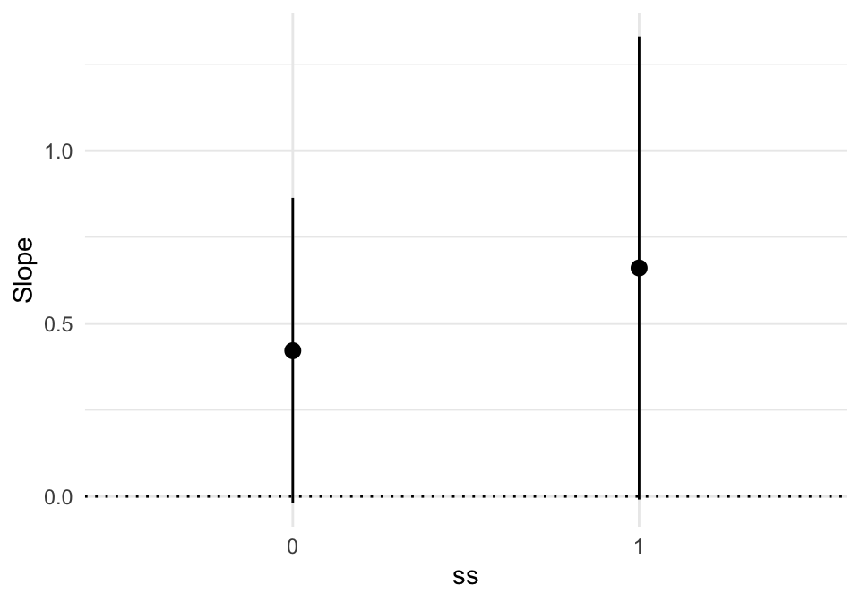
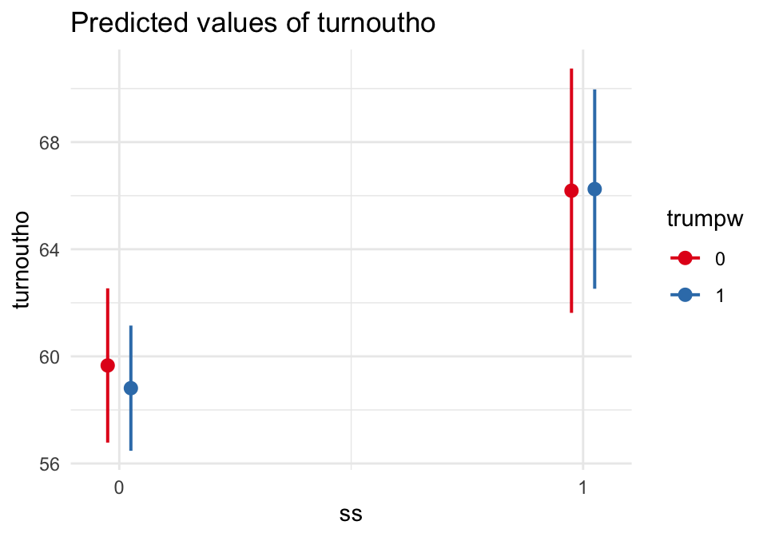
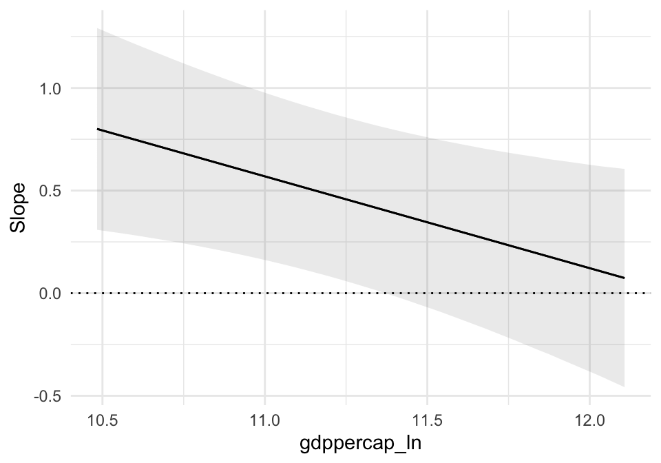
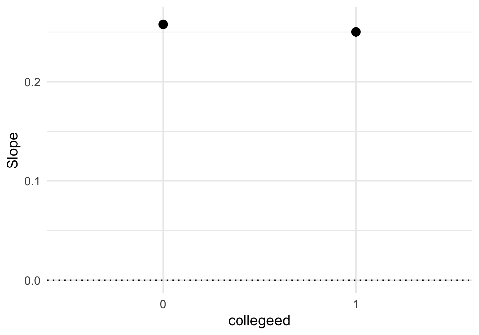
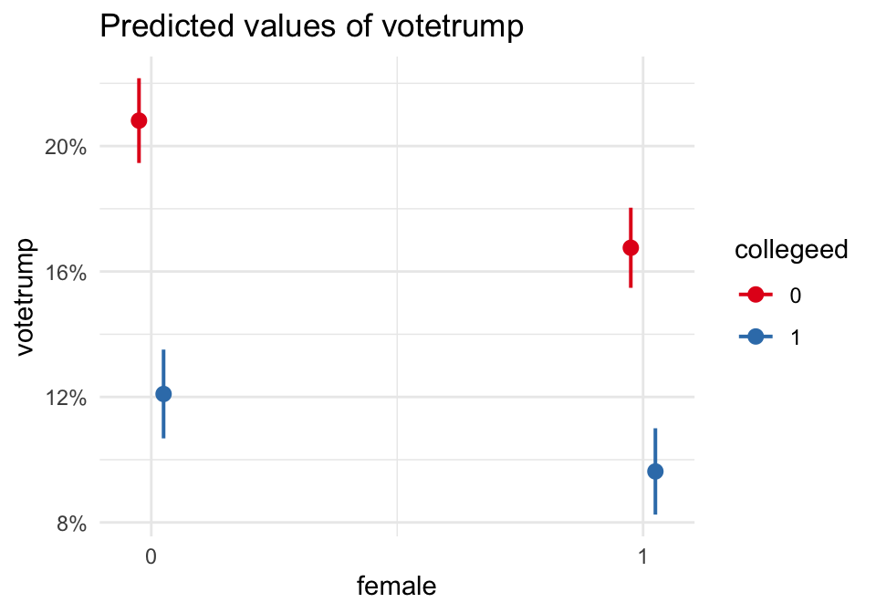
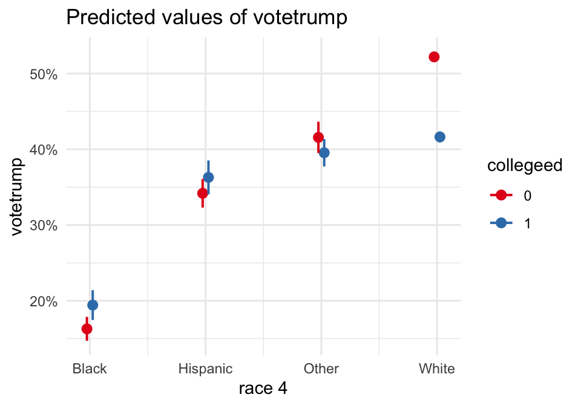
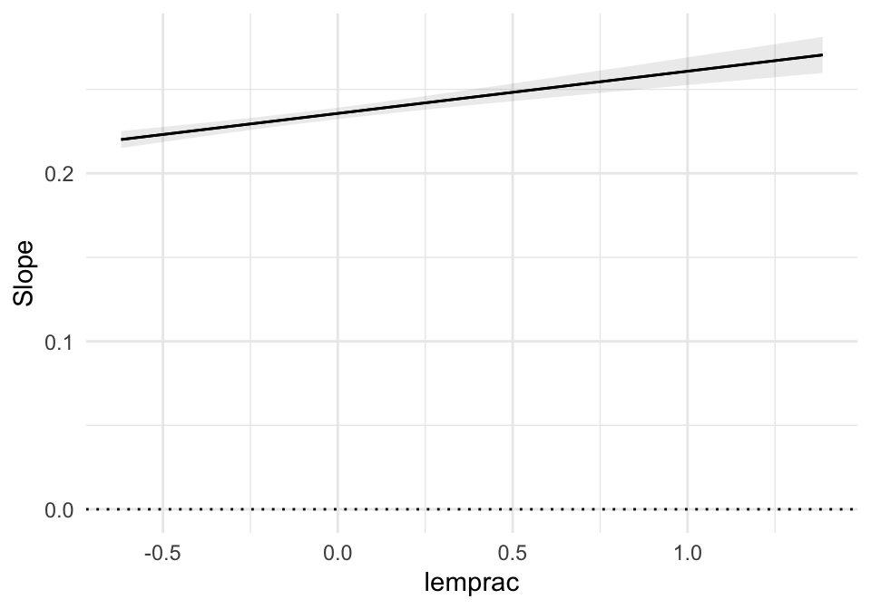

22 Lecture 9: Interactions
22.1 Interactions in Linear Models
Interactions let the effect of one variable depend on the level of another. In social science language: context conditions the relationship.
We will build intuition with two vignettes:
- State-level turnout (OLS): We’ll also compare classical vs robust standard errors.
- Individual voting (LPM): We’ll use a linear probability model to keep interpretation simple, and then discuss trade-offs.
Start with a model with an interaction:
\[ y = \beta_0 + \beta_1 X + \beta_2 Z + \beta_3 (X\cdot Z) + \varepsilon \]
Two key interpretations:
Conditional effect of \(X\) (a.k.a. “simple slope”): \[ \frac{\partial E[y]}{\partial X} = \beta_1 + \beta_3 Z \]
Conditional regression line:
- If \(Z=0\): \(E[y|X,Z=0] = \beta_0 + \beta_1 X\)
- If \(Z=1\): \(E[y|X,Z=1] = (\beta_0+\beta_2) + (\beta_1+\beta_3)X\)
So, \(\beta_3\) is literally the difference in slopes (when \(Z\) is a dummy).
We’ll plug in real coefficients below.
22.2 Vignette A: Turnout and conditional relationships (OLS)
library(tidyverse)
library(sjPlot)
library(marginaleffects)
library(modelsummary)
data(election_turnout, package = "stevedata")
election_turnout <- election_turnout %>%
mutate(
ss = factor(ss),
trumpw = factor(trumpw),
region = factor(region),
gdppercap_ln = log(gdppercap)
)
summary(election_turnout$turnoutho)## Min. 1st Qu. Median Mean 3rd Qu. Max.
## 42.20 56.75 60.90 60.82 64.75 74.20
sd(election_turnout$turnoutho)## [1] 6.11719922.2.1 A.1 Main example (continuous × dummy): education and swing states
Here is the interaction model:
\[ turnoutho_i = \beta_0 + \beta_1 percoled_i + \beta_2 ss_i + \beta_3(percoled_i \cdot ss_i) + \varepsilon_i \]
model_turnout_cd <- lm(
turnoutho ~ percoled*ss + gdppercap_ln + trumpw,
data = election_turnout
)
# Side-by-side: classical vs robust SEs
modelsummary(
list("Classical SEs" = model_turnout_cd,
"Robust SEs (HC3)" = model_turnout_cd),
vcov = list("Classical SEs" = NULL,
"Robust SEs (HC3)" = "HC3"),
title = "Turnout with Interaction: percoled × swing state",
coef_rename = c(
"(Intercept)" = "Intercept",
"percoled" = "% College Educated",
"ss1" = "Swing State",
"percoled:ss1" = "% College × Swing State",
"gdppercap_ln" = "GDP pc (log)",
"trumpw1" = "Trump Won"
),
gof_map = c("nobs","r.squared"),
stars = TRUE,
notes = list(
"Column 1: classical OLS standard errors. Column 2: robust (HC3) standard errors.",
"*** p<0.001, ** p<0.01, * p<0.05"
)
)| Classical SEs | Robust SEs (HC3) | |
|---|---|---|
| + p < 0.1, * p < 0.05, ** p < 0.01, *** p < 0.001 | ||
| Column 1: classical OLS standard errors. Column 2: robust (HC3) standard errors. | ||
| *** p<0.001, ** p<0.01, * p<0.05 | ||
| Intercept | 70.397 | 70.397 |
| (41.929) | (56.170) | |
| % College Educated | 0.422+ | 0.422 |
| (0.225) | (0.282) | |
| Swing State | -0.022 | -0.022 |
| (10.226) | (12.187) | |
| GDP pc (log) | -2.148 | -2.148 |
| (4.280) | (5.070) | |
| Trump Won | -0.522 | -0.522 |
| (1.847) | (2.900) | |
| % College × Swing State | 0.239 | 0.239 |
| (0.341) | (0.405) | |
| Num.Obs. | 51 | 51 |
| R2 | 0.447 | 0.447 |
From the model:
- When
ss = 0(not a swing state), the slope ofpercoledis: \[ \text{slope} = \beta_1 \] - When
ss = 1(swing state), the slope ofpercoledis: \[ \text{slope} = \beta_1 + \beta_3 \]
Let’s compute and display these “simple slopes” directly:
# Simple slopes of percoled at ss=0 and ss=1
slopes(model_turnout_cd, variables = "percoled", newdata = datagrid(ss = levels(election_turnout$ss)))##
## ss Estimate Std. Error z Pr(>|z|) S 2.5 % 97.5 %
## 0 0.422 0.225 1.87 0.0614 4.0 -0.02021 0.863
## 1 0.661 0.342 1.93 0.0531 4.2 -0.00886 1.330
##
## Term: percoled
## Type: response
## Comparison: dY/dXNow let’s plot predicted turnout across percoled for swing vs non-swing states:
plot_model(model_turnout_cd, type = "pred", terms = c("percoled", "ss")) +
theme_minimal()And a marginal effect plot is another way of saying the same thing:
plot_slopes(model_turnout_cd, variables = "percoled", condition = "ss") +
geom_hline(yintercept = 0, linetype = "dotted") +
theme_minimal()
22.2.2 A.2 Interaction zoo (OLS)
22.2.2.1 (1) Dummy × Dummy: swing states × Trump-win states
Now we interpret \(\beta_3\) as a difference-in-differences term:
model_turnout_dd <- lm(
turnoutho ~ ss*trumpw + percoled + gdppercap_ln,
data = election_turnout
)
modelsummary(
model_turnout_dd,
title = "Turnout: swing state × Trump won (Dummy × Dummy)",
coef_rename = c(
"(Intercept)" = "Intercept",
"ss1" = "Swing State",
"trumpw1" = "Trump Won",
"ss1:trumpw1" = "Swing × Trump Won",
"percoled" = "% College Educated",
"gdppercap_ln" = "GDP pc (log)"
),
gof_map = c("nobs","r.squared"),
stars = TRUE
)| (1) | |
|---|---|
| + p < 0.1, * p < 0.05, ** p < 0.01, *** p < 0.001 | |
| Intercept | 77.523+ |
| (41.197) | |
| Swing State | 6.526* |
| (2.495) | |
| Trump Won | -0.848 |
| (2.069) | |
| % College Educated | 0.469* |
| (0.215) | |
| GDP pc (log) | -2.911 |
| (4.176) | |
| Swing × Trump Won | 0.908 |
| (3.258) | |
| Num.Obs. | 51 |
| R2 | 0.442 |
plot_model(model_turnout_dd, type = "int") +
theme_minimal()
22.2.2.2 (2) Dummy × Categorical: swing states × region
model_turnout_dc <- lm(
turnoutho ~ ss*region + percoled + gdppercap_ln + trumpw,
data = election_turnout
)
modelsummary(
model_turnout_dc,
title = "Turnout: swing state × region (Dummy × Categorical)",
gof_map = c("nobs","r.squared"),
stars = TRUE
)| (1) | |
|---|---|
| + p < 0.1, * p < 0.05, ** p < 0.01, *** p < 0.001 | |
| (Intercept) | 77.370+ |
| (42.926) | |
| ss1 | 7.753** |
| (2.807) | |
| regionNortheast | 0.386 |
| (3.016) | |
| regionSouth | -2.758 |
| (2.229) | |
| regionWest | -2.647 |
| (2.394) | |
| percoled | 0.399+ |
| (0.225) | |
| gdppercap_ln | -2.547 |
| (4.335) | |
| trumpw1 | -0.986 |
| (2.126) | |
| ss1 × regionNortheast | -2.447 |
| (4.846) | |
| ss1 × regionSouth | -1.230 |
| (4.191) | |
| ss1 × regionWest | -3.241 |
| (4.705) | |
| Num.Obs. | 51 |
| R2 | 0.512 |
plot_model(model_turnout_dc, type = "pred", terms = c("region","ss")) +
theme_minimal()
22.2.2.3 (3) Continuous × Continuous: education × state wealth
model_turnout_cc <- lm(
turnoutho ~ percoled*gdppercap_ln + ss + trumpw,
data = election_turnout
)
modelsummary(
model_turnout_cc,
title = "Turnout: percoled × log(GDP pc) (Continuous × Continuous)",
coef_rename = c(
"(Intercept)" = "Intercept",
"percoled" = "% College Educated",
"gdppercap_ln" = "GDP pc (log)",
"percoled:gdppercap_ln" = "% College × GDP pc (log)",
"ss1" = "Swing State",
"trumpw1" = "Trump Won"
),
gof_map = c("nobs","r.squared"),
stars = TRUE
)| (1) | |
|---|---|
| + p < 0.1, * p < 0.05, ** p < 0.01, *** p < 0.001 | |
| Intercept | -101.422 |
| (89.009) | |
| % College Educated | 5.491* |
| (2.261) | |
| GDP pc (log) | 13.101 |
| (8.191) | |
| Swing State | 6.614*** |
| (1.540) | |
| Trump Won | 0.487 |
| (1.825) | |
| % College × GDP pc (log) | -0.447* |
| (0.201) | |
| Num.Obs. | 51 |
| R2 | 0.497 |
# Visualize: predicted turnout across percoled at representative GDP values
plot_model(model_turnout_cc, type = "pred",
terms = c("percoled", "gdppercap_ln [7.5, 8.0, 8.5]")) +
theme_minimal()
# Marginal effect of percoled across GDP
plot_slopes(model_turnout_cc, variables = "percoled", condition = "gdppercap_ln") +
geom_hline(yintercept = 0, linetype = "dotted") +
theme_minimal()
22.3 Vignette B: Interactions in a Linear Probability Model (TV16)
data(TV16, package = "stevedata")
TV16 <- TV16 %>%
mutate(
female = factor(female),
collegeed = factor(collegeed),
# Collapse race for cleaner teaching plots:
race4 = case_when(
racef == "White" ~ "White",
racef == "Black" ~ "Black",
racef == "Hispanic" ~ "Hispanic",
TRUE ~ "Other"
),
race4 = factor(race4),
votetrump = as.numeric(votetrump)
)
table(TV16$votetrump)##
## 0 1
## 26177 1875522.3.2 B.1 Main example (continuous × dummy): ideology × college education
model_tv_cd <- lm(
votetrump ~ ideo*collegeed + female + race4,
data = TV16
)
modelsummary(
list("Classical SEs" = model_tv_cd,
"Robust SEs (HC3)" = model_tv_cd),
vcov = list("Classical SEs" = NULL,
"Robust SEs (HC3)" = "HC3"),
title = "LPM: Trump vote with interaction (ideo × college)",
stars = TRUE,
notes = list(
"Binary outcome estimated by OLS (Linear Probability Model).",
"Column 2 uses robust (HC3) standard errors."
)
)| Classical SEs | Robust SEs (HC3) | |
|---|---|---|
| + p < 0.1, * p < 0.05, ** p < 0.01, *** p < 0.001 | ||
| Binary outcome estimated by OLS (Linear Probability Model). | ||
| Column 2 uses robust (HC3) standard errors. | ||
| (Intercept) | -0.575*** | -0.575*** |
| (0.009) | (0.008) | |
| ideo | 0.258*** | 0.258*** |
| (0.002) | (0.002) | |
| collegeed1 | -0.056*** | -0.056*** |
| (0.011) | (0.008) | |
| female1 | -0.034*** | -0.034*** |
| (0.004) | (0.004) | |
| race4Hispanic | 0.178*** | 0.178*** |
| (0.009) | (0.009) | |
| race4Other | 0.243*** | 0.243*** |
| (0.009) | (0.009) | |
| race4White | 0.305*** | 0.305*** |
| (0.006) | (0.006) | |
| ideo × collegeed1 | -0.008* | -0.008** |
| (0.003) | (0.003) | |
| Num.Obs. | 43430 | 43430 |
| R2 | 0.408 | 0.408 |
| R2 Adj. | 0.407 | 0.407 |
| AIC | 39160.7 | 39160.7 |
| BIC | 39238.8 | 39238.8 |
| Log.Lik. | -19571.344 | -19571.344 |
| RMSE | 0.38 | 0.38 |
| Std.Errors | Classical SEs | Robust SEs (HC3) |
- When
collegeed = 0, the marginal effect of ideology is \(\beta_1\). - When
collegeed = 1, the marginal effect is \(\beta_1 + \beta_3\). - Because \(y\) is 0/1, interpret these as percentage point changes in Pr(Trump vote).
plot_slopes(model_tv_cd, variables = "ideo", condition = "collegeed") +
geom_hline(yintercept = 0, linetype = "dotted") +
theme_minimal()
plot_model(model_tv_cd, type = "pred", terms = c("ideo", "collegeed")) +
theme_minimal() +
scale_y_continuous(labels = scales::percent)
Quick check: do predicted values leave [0,1]?
pred_check <- predictions(model_tv_cd) %>%
summarize(min_pred = min(estimate), max_pred = max(estimate))
pred_check## min_pred max_pred
## 1 -0.415327 1.01862722.3.3 B.2 Interaction zoo (LPM)
22.3.3.1 (1) Dummy × Dummy: female × college
model_tv_dd <- lm(
votetrump ~ female*collegeed + ideo + race4,
data = TV16
)
modelsummary(
model_tv_dd,
title = "LPM: female × college (Dummy × Dummy)",
stars = TRUE
)| (1) | |
|---|---|
| + p < 0.1, * p < 0.05, ** p < 0.01, *** p < 0.001 | |
| (Intercept) | -0.562*** |
| (0.008) | |
| female1 | -0.041*** |
| (0.005) | |
| collegeed1 | -0.087*** |
| (0.005) | |
| ideo | 0.255*** |
| (0.002) | |
| race4Hispanic | 0.178*** |
| (0.009) | |
| race4Other | 0.244*** |
| (0.009) | |
| race4White | 0.306*** |
| (0.006) | |
| female1 × collegeed1 | 0.016* |
| (0.007) | |
| Num.Obs. | 43430 |
| R2 | 0.408 |
| R2 Adj. | 0.407 |
| AIC | 39161.2 |
| BIC | 39239.3 |
| Log.Lik. | -19571.578 |
| RMSE | 0.38 |
plot_model(model_tv_dd, type = "int") +
theme_minimal() +
scale_y_continuous(labels = scales::percent)
22.3.3.2 (2) Dummy × Categorical: college × race4 (collapsed)
model_tv_dc <- lm(
votetrump ~ collegeed*race4 + female + ideo,
data = TV16
)
modelsummary(
model_tv_dc,
title = "LPM: college × race4 (Dummy × Categorical)",
stars = TRUE
)| (1) | |
|---|---|
| + p < 0.1, * p < 0.05, ** p < 0.01, *** p < 0.001 | |
| (Intercept) | -0.604*** |
| (0.009) | |
| collegeed1 | 0.031* |
| (0.012) | |
| race4Hispanic | 0.179*** |
| (0.012) | |
| race4Other | 0.253*** |
| (0.013) | |
| race4White | 0.359*** |
| (0.008) | |
| female1 | -0.035*** |
| (0.004) | |
| ideo | 0.254*** |
| (0.002) | |
| collegeed1 × race4Hispanic | -0.010 |
| (0.019) | |
| collegeed1 × race4Other | -0.052** |
| (0.019) | |
| collegeed1 × race4White | -0.137*** |
| (0.013) | |
| Num.Obs. | 43430 |
| R2 | 0.410 |
| R2 Adj. | 0.410 |
| AIC | 38986.4 |
| BIC | 39081.9 |
| Log.Lik. | -19482.200 |
| RMSE | 0.38 |
plot_model(model_tv_dc, type = "pred", terms = c("race4", "collegeed")) +
theme_minimal() +
scale_y_continuous(labels = scales::percent)
22.3.3.3 (3) Continuous × Continuous: ideology × racial resentment proxy (lemprac)
model_tv_cc <- lm(
votetrump ~ ideo*lemprac + female + collegeed + race4,
data = TV16
)
modelsummary(
model_tv_cc,
title = "LPM: ideo × lemprac (Continuous × Continuous)",
stars = TRUE
)| (1) | |
|---|---|
| + p < 0.1, * p < 0.05, ** p < 0.01, *** p < 0.001 | |
| (Intercept) | -0.499*** |
| (0.008) | |
| ideo | 0.236*** |
| (0.002) | |
| lemprac | 0.078*** |
| (0.012) | |
| female1 | -0.023*** |
| (0.004) | |
| collegeed1 | -0.075*** |
| (0.004) | |
| race4Hispanic | 0.161*** |
| (0.009) | |
| race4Other | 0.222*** |
| (0.009) | |
| race4White | 0.285*** |
| (0.006) | |
| ideo × lemprac | 0.025*** |
| (0.004) | |
| Num.Obs. | 43428 |
| R2 | 0.428 |
| R2 Adj. | 0.428 |
| AIC | 37647.4 |
| BIC | 37734.2 |
| Log.Lik. | -18813.719 |
| RMSE | 0.37 |
plot_model(model_tv_cc, type = "pred", terms = c("ideo", "lemprac [2,4,6]")) +
theme_minimal() +
scale_y_continuous(labels = scales::percent)
plot_slopes(model_tv_cc, variables = "ideo", condition = "lemprac") +
geom_hline(yintercept = 0, linetype = "dotted") +
theme_minimal()
22.4 Lecture Assignment
- In the turnout model (A.1), write the fitted line for
ss = 0andss = 1. Identify the slope in each case. - In the TV16 model (B.1), interpret the interaction sign: does ideology matter more or less among college-educated respondents?
- Pick two values of the continuous variable (e.g.,
ideo=2andideo=4). Compute the predicted probability for college vs non-college using the estimated coefficients and compare.